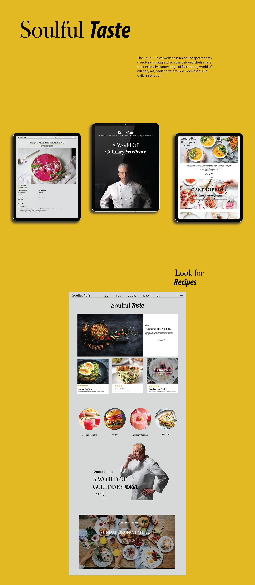

Soulful Taste is a website for the world's most famous chefs from all around the world. The project is based on the chefs , a website that is Surely different and offers more then just well structured recipes. The aim to the project was to develop a new website, where chef’s candid play their most fine and unique recipes and connect with the users and help them learn just how easy it can be to prepare delicious food at the comfort of your home.
